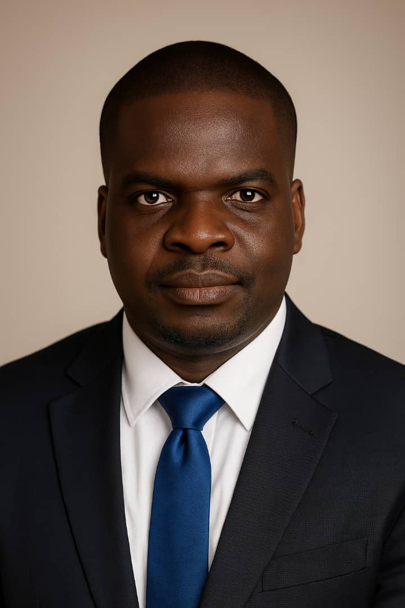

We are a Family Hospital located in Matogbun, Ifo LGA of Ogun State. The facility was established in the environment due to the needs of the residents for orthodox healthcare. The hospital is headed by a Consultant Family Physician. We offer 24 hours services across many specialties including General Medicine, Internal Medicine sub-specialties, Women Health/Maternity, Children Health, Surgery, et cetera.


Bespoke healthcare for everyone

24-7 access to a Specialist Doctor

Family-centered care
Our Clinics
Adult Medicine
Children's Health
Surgery
General Medicine
Women's Health
Dr Ademola Orolu is a Consultant Family Physician and Medical Director of Nathaniel Health Consulting. With about ten years post-fellowship experience, he has broad competences in the specialists care of communicable and non-cummunicable diseases. He is also a tech enthusiast as he promotes the use of technology in optimizing clinical and non-clinical outcomes.

Dr G. Olumide is a visiting Consultant Orthopedic Surgeon. In addition to many years of experience in Nigeria and sub-Saharan Africa, he has worked in Europe and America.